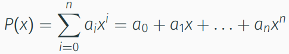

Mathe Klausur
Vorlesung 8: Stetige Funktionen, Polynome
Stetige Funktionen
Wenn lim n->∞ xn = x gilt dann ist die funktion stetig
f(x) = g ist auch stetig, wenn g eine feste Zahl ist
Definitionen
Besitzen keine Sprungstellen oder Unendlichkeitsstellen (Pole)
hat keine Oszillationen
Bisektionsverfahen
Nullstellen berechnung von stetigen Funktionen
- Man fängt mit zwei Startwerten x₁
- Man wählt nun: x₃ = (x₁+x₂)/2
- Wenn f(x₁)*f(x₃)<0: man fährt mit (x₁,x₂) := (x₁,x₃) fort
- Wenn f(x₁)*f(x₃)>0: man fährt mit (x₁,x₂) := (x₃,x₂) fort
- Wenn f(x₁)*f(x₃) = 0: x₃ ist Nullstelle.
- Die Länge des Intervalls halbiert sich durch jedem durchlauf
Polynome
Ein Polynom n-ten Grades ist eine Funktion P: ℝ->ℝ der Form

Eigenschaften
- Ein Polynom mit nur geraden Exponenten heißt gerade: P(-x) = P(x)
- Ein Polynom mit nur ungeraden Exponenten heißt ungerade: P(-x) = -P(x)
- Ein Polynom vom Grad n hat höchstebs n reelle Nullstellen